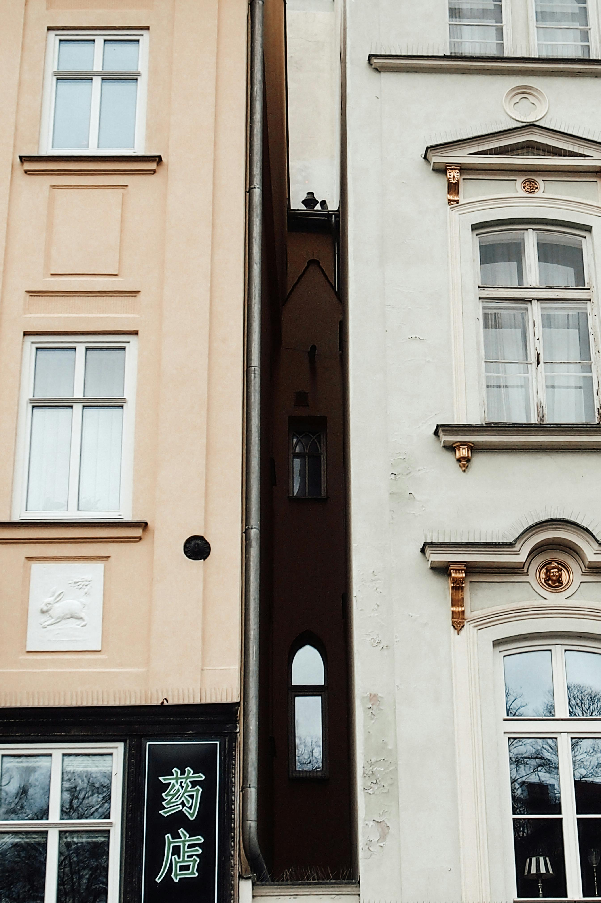
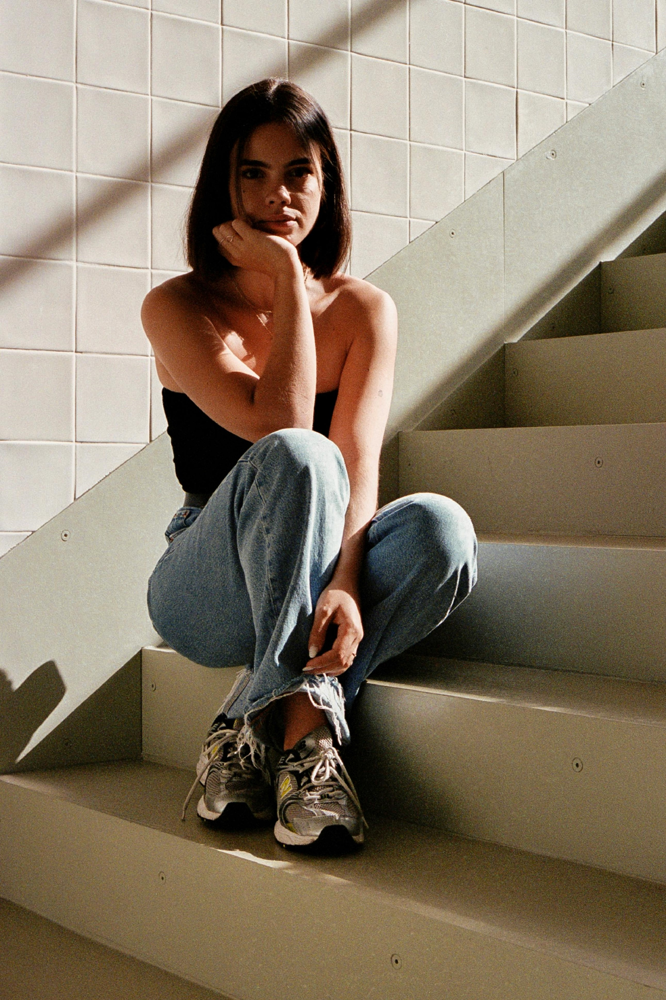

Buildings with a distinctive architectural style, blending seamlessly into surroundings with a balanced.

This photo, the girl sits serenely on the staircase, evoking a sense of quiet introspection and solitude.
The photograph captures a girl engrossed in the act of opening a book, her curiosity and anticipation palpable against backdrop of simplicity.

Against a backdrop of verdant leaves and earthy branches, a delicate white flower emerges, quietly captivating amidst nature's vibrant canvas.